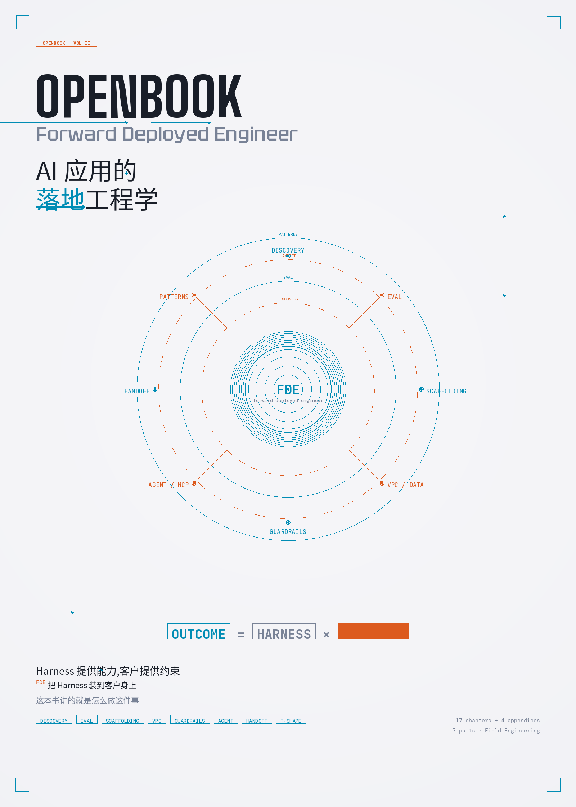

Outcome = Harness × Customer
OpenBook Vol I 教你怎么造 Harness。
OpenBook Vol II 教你怎么把 Harness 装到客户身上。
一本面向 Forward Deployed Engineer (FDE) 的中文实战手册。
DISCOVERY
│
PATTERNS EVAL
\ │ /
\ │ /
┌───────────────┐
│ │
HANDOFF ─────│ FDE │───── SCAFFOLDING
│ │
└───────────────┘
/ │ \
/ │ \
AGENT/MCP VPC/DATA
│
GUARDRAILS
Outcome = Harness × Customer
(能力) (约束)
它们决定了 FDE 跟普通 AI 工程师的判断方式根本不同。
不卖功能，卖结果。客户付钱不是为了 RAG 准确率 85%，是为了"少招 5 个法务"。
不回头，往前修。客户业务等不起回滚。所有架构决策默认"未来要边跑边修"。
没 Eval，不写代码。第一周让业务专家手写 200 道带标准答案的题——这是项目的"宪法"。
7 个 Part · 17 章 · 4 附录 · 全部基于 AWS Bedrock 生态
在 3 分钟内决定要不要花时间读完这本书。
中英双语，开源免费，PDF 可离线阅读